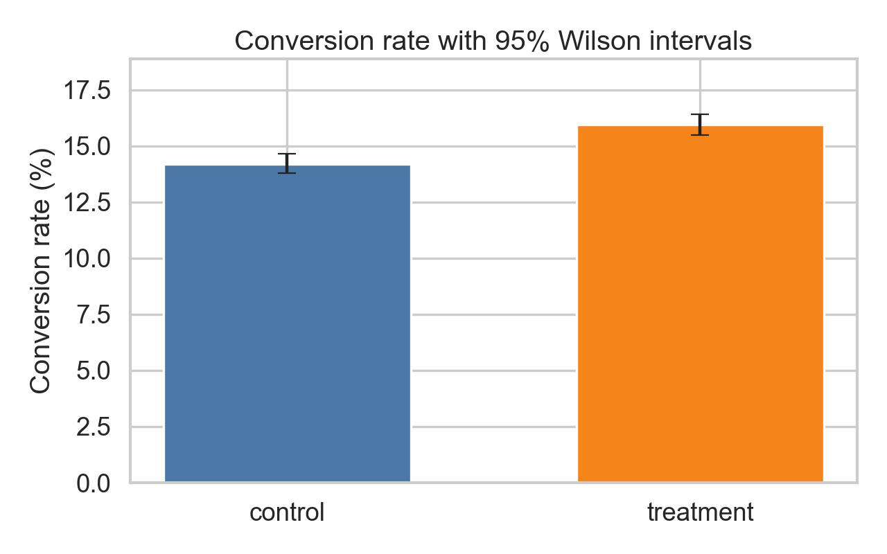
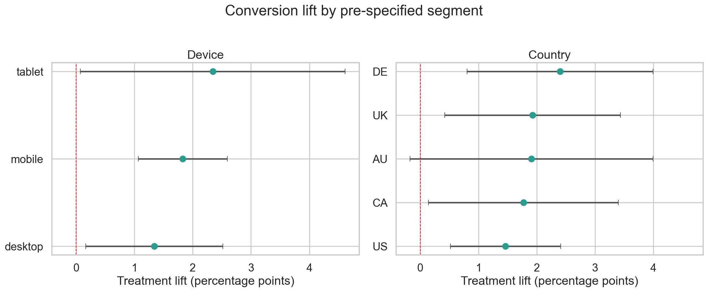

E-commerce · Checkout optimization · 28-day test
One-Click Checkout
A randomized experiment evaluating whether a faster checkout increases conversion and revenue without increasing customer refunds.
RecommendationShip with staged rollout
Conversion lift
+1.74pp
95% CI +1.12 to +2.37 pp
p < 0.001 · statistically significant
01 · Primary evidence
The treatment cleared the decision bar
Randomization was balanced, the primary effect was positive and precise, and revenue moved in the same direction.

✓
Assignment integrity
SRM test p = 1.000 against the planned 50/50 split.
✓
Primary metric
+12.3% relative lift; two-proportion z-test p < 0.001.
✓
Business value
Revenue per user increased from $10.71 to $11.87.
✓
Customer protection
Refund movement was small and statistically insignificant.
02 · Heterogeneity
No Simpson's paradox reversal
Device and country were pre-specified diagnostic cuts. Their estimates support consistency, but are not independent shipping claims.

03 · Analytical design
Decision-led, reproducible analysis
The user is the unit of randomization and analysis. All results follow intent-to-treat.
Validate
Uniqueness, missingness, assignment balance, covariate balance, and sample ratio mismatch.
Estimate
Two-proportion z-test for conversion and non-parametric bootstrap for zero-inflated revenue.
Stress test
Pre-specified segment consistency and refund rate among customers at risk of refund.
Decide
Positive significant conversion lift, valid assignment, and no adverse guardrail movement.
Recommended action
Release in stages, then monitor two purchase cycles.
Track conversion, refunds, checkout latency, payment errors, and support contacts with an automatic rollback threshold before reaching 100% exposure.